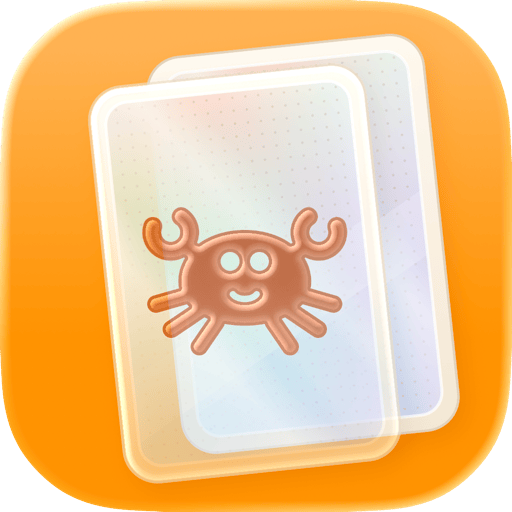
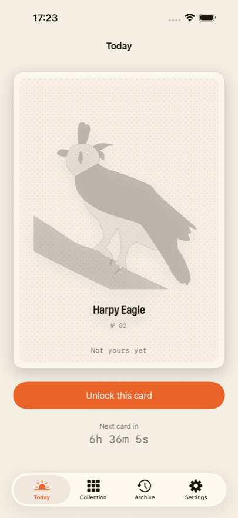
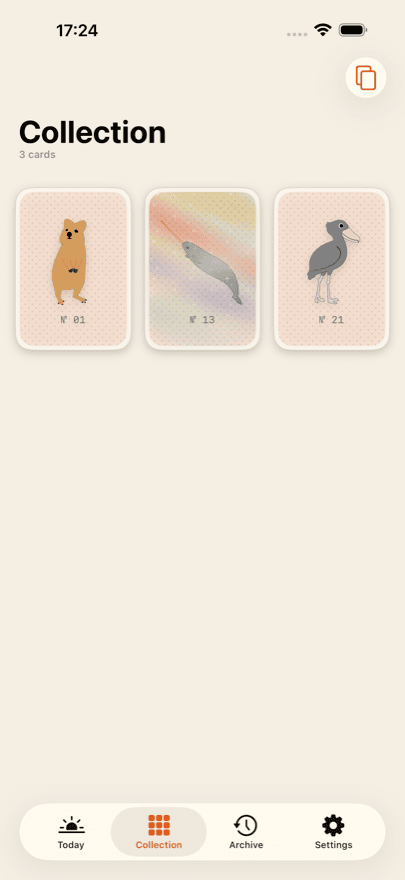
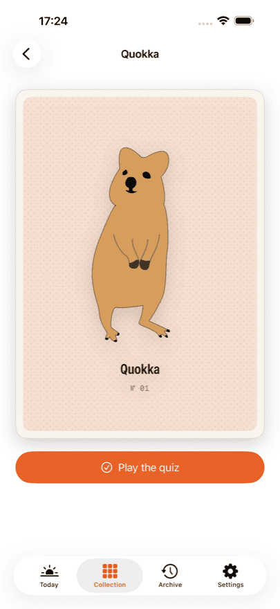
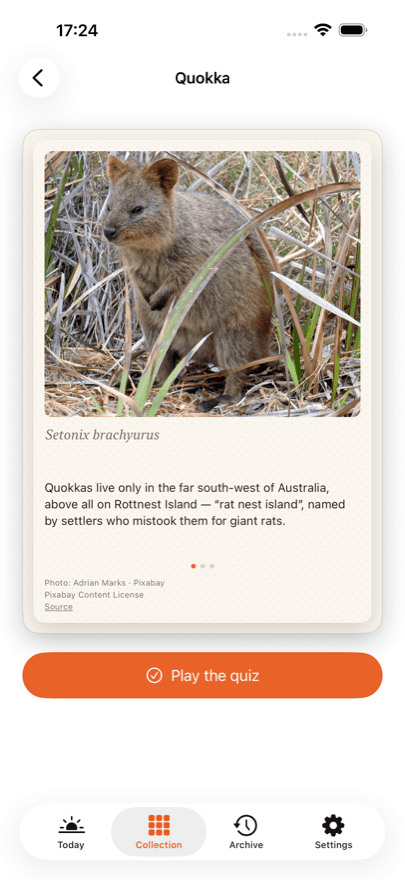
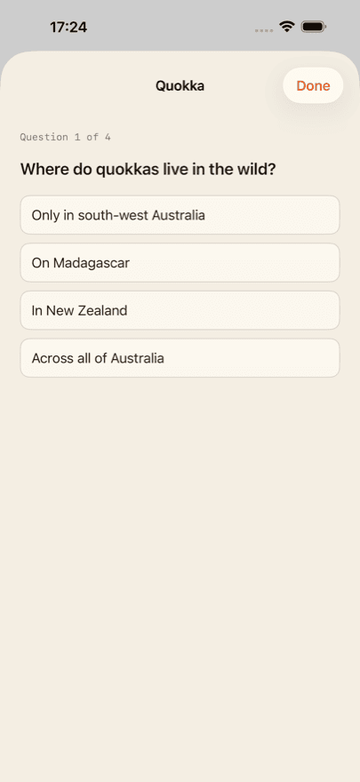

App for iPhone
Daily Bestiary
Rare animal cards to collect
Every day a new hand-drawn animal card is waiting for you. Unlock it and it is yours: turn it over for a real photograph, three facts, the scientific name and a four-question quiz.
Your first three cards are on the house. One of them is a holo card — tilt your phone and the sheen moves across it.
Daily Bestiary is coming to the App Store shortly. Once it is released, this button takes you straight to it.
What you get
-
A card a day
One, never more. Today's card is worked out from the day you started, not from a fixed calendar date — so you begin whenever you like.
-
A photograph and three facts
Every back carries a real photograph of the animal, three facts and the scientific name.
-
A quiz for every animal
Four questions per animal, read over by a biology teacher. You can always play them again.
-
A collection that grows
The album shows your own cards and nothing else. No empty slots, no “x of y”, no race.
-
Holo cards
Some cards shine: tilt your phone and the light travels across the surface.
What it looks like





Collector
Collector opens the archive, so a day you missed can still be claimed. Today's card is included every day, and you get your quiz statistics across the whole collection.
Collector is a subscription and renews until you cancel it. You can cancel at any time in your Apple account settings. Current prices and terms are shown in the App Store, because they differ from country to country.
No account, no feed, no ads
There is no sign-up and no login. Your collection lives on your device and — if you are signed in to iCloud — syncs privately between your own devices. The developer has no access to it.
There is nothing to scroll and nothing to grind. No ads, no ad networks, no tracking across apps. Purchases are handled through a service provider; the privacy policy says exactly what reaches it.
Photo credits
The drawings on the fronts of the cards were made by hand. The photographs on the backs come from open sources — Pixabay, Unsplash and Wikimedia Commons.
Every photograph is credited on the back of its own card, with the photographer, the licence and a link to the source. Not in the small print, but where the picture is.
Frequently asked
What does Daily Bestiary cost?
The download is free, and your first three cards are on the house — with the back, the facts and the quiz. After that you unlock today's card on its own, buy a ten-card pack, or subscribe to Collector. Current prices are shown in the App Store; they differ from country to country.
Do I need an account?
No. There is no sign-up, no login and no profile. The app never asks for a name or an email address.
How many cards are there in total?
That is not stated anywhere — not in the app, not here. A total turns collecting into a progress bar, and that is exactly what this is not. When you have every card there is, the app will tell you.
What happens if I miss a day?
That card is not lost. Collector opens the archive, where missed days can be claimed later. Without Collector, the next day simply brings the next card.
Does my collection sync between iPhone and iPad?
Yes, as long as both devices are signed in to iCloud with the same Apple Account. Syncing runs through your own private iCloud database, which the developer cannot see.
I reinstalled the app — are my purchases gone?
No. In the app's settings and on every purchase screen there is “Restore purchases”. That reattaches your subscription and any remaining credit to your Apple Account. Your collection itself comes back through iCloud.
How do I cancel Collector?
Through Apple rather than the app: Settings → your name → Subscriptions. You can cancel there at any time, effective at the end of the current period. The app offers the same route through the Customer Center in its settings.
Does the app work without an internet connection?
Yes. Every card, photograph and quiz question ships inside the app and nothing is downloaded. A connection is only needed for purchases and for iCloud syncing.